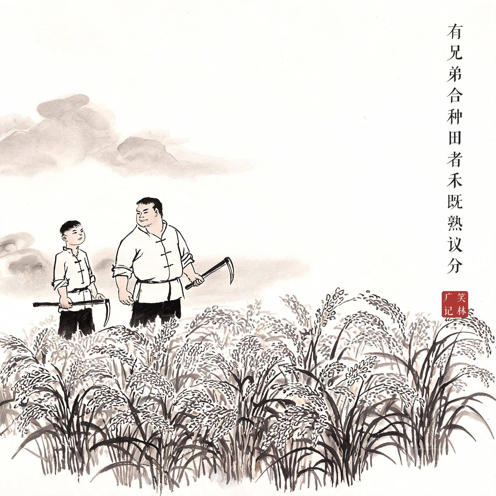
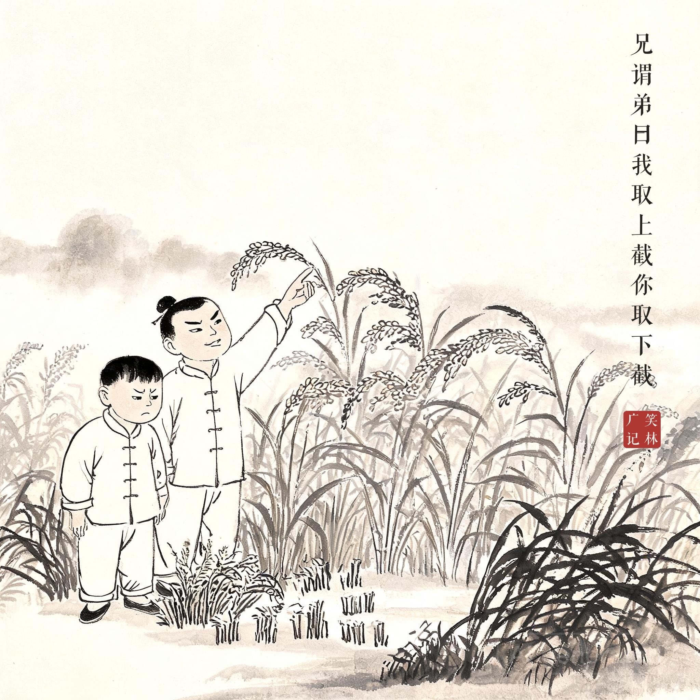
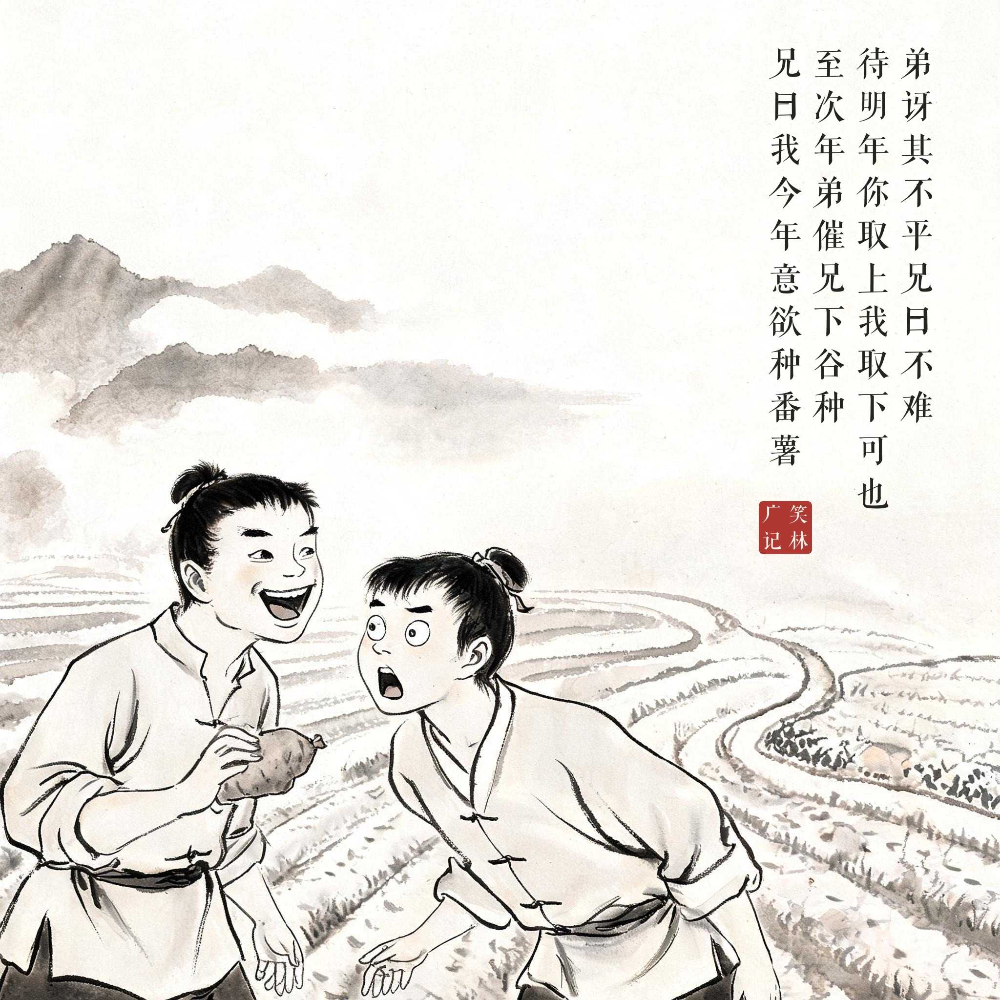

《笑林广记 · 贪吝部》（[清]游戏主人纂集）
有兄弟合种田者，禾既熟。议分。兄谓弟曰："我取上截，你取下截。"弟讶其不平，兄曰："不难，待明年你取上，我取下可也。"至次年，弟催兄下谷种，兄曰："我今年意欲种芋头哩。"
有兄弟俩合种一块田，稻子熟了，商量怎么分。哥哥对弟弟说："上截归我，下截归你。"弟弟觉得不平，哥哥说："这不难，等到明年你拿上截、我拿下截就是了。"到了第二年，弟弟催哥哥下谷种，哥哥说："我今年打算种芋头哩。"
分粮截上截的是哥哥，挑作物种地下的也是哥哥——上截永远归他，"轮流"只是说给弟弟听的词。第二年干脆改种芋头，连把戏都懒得再演。合同里最深的坑，从来写在明面上。
底本作"芋头"，题款与画题从通行本作"番薯"——芋头、番薯皆收于土下，无上截可分，笑意全同。